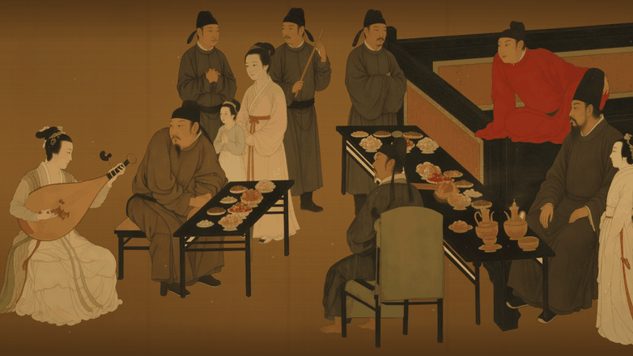
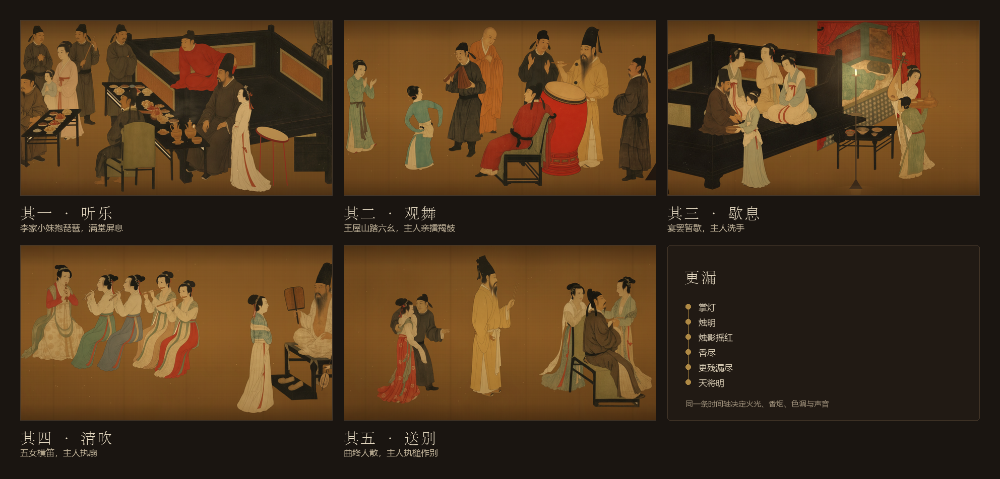
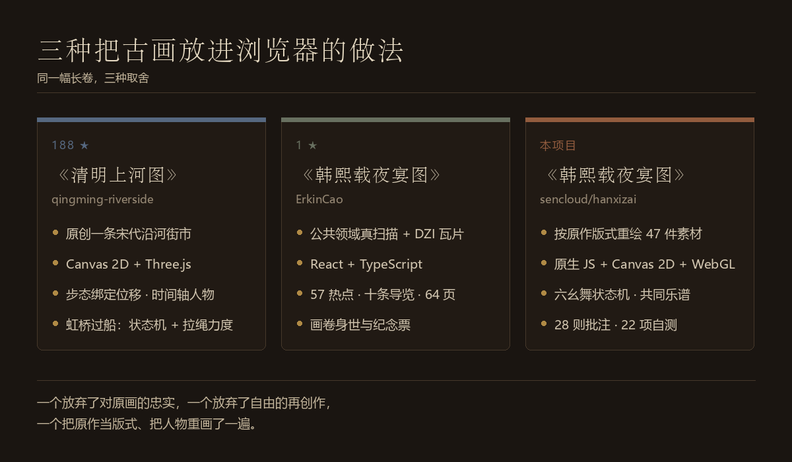

其一
这是什么
《韩熙载夜宴图》是手卷，高 28.7 厘米，三米多长，从右往左看。在展柜前看真迹，人是一段一段往左挪的；换到屏幕上，高清图给了你放大，却把「挪」这件事去掉了。
这个页面把「挪」还回来：一条可以一直走到底的长卷，五段之间用屏风隔开，人物在动、烛火在摇、香烟在升，走到卷尾落款用印。它不下载任何外部资源，打开就能跑。

其二
五段
原作横向的每一个像素都对应世界坐标：worldX = (原图 x − 4080) × 1.8。观众不是在五张图之间跳转，而是沿同一条轴走完整卷；屏风既是陈设，也是段落之间的「幕」。
- 其一听乐李家小妹抱琵琶，满堂屏息。点琵琶可以拨弦，满堂随乐声起伏。
- 其二观舞王屋山踏六幺，主人亲擂羯鼓。按住鼓面蓄力、松开击鼓，鼓点合度则舞步更快，过猛会乱了半步。
- 其三歇息宴罢暂歇，主人洗手，侍女环坐。点烛火可以剪烛花，托盘侍女会把茶点送到床前再回来。
- 其四清吹五女横笛，主人袒衣执扇。点乐女起拍收拍，笛声按画面位置左右分开。
- 其五送别曲终人散，主人执槌作别。走到卷尾，落款用印。

其三
怎么做的
画中每一个人、每一件床榻屏风，都按原作同一位置的局部重新生成为分层素材，再摆回原画上的同一个框里：位置、朝向、衣色、前后遮挡与原作一致。
版式对齐
以原作全卷（12,172 × 500）为基准，42 张生成图经抠底、做旧、按肤色调头、拆出可动部件（鼓槌、团扇、拨弦的手），得到 47 件运行时素材。每件素材都记着它在原画上占的那一框。
一条时间轴
更漏从掌灯走到天将明，推演出的量同时作用在火光、香烟、色调与声音上；静止的床榻与活动的人物共用同一层氛围着色，每支烛还各自的熄灭时刻错开。
同一份乐谱
配乐是一支 D 宫五声调式的小曲（64 拍一轮）。琵琶女在起音上拨弦，乐女在句末换气，宾客应节击掌——人物动作与音乐读的是同一份谱。
看原图
右下角可以打开全卷原作，画上 28 则批注把旧说与推断分开写；在长卷里点到同一处，也能「入画」回到对应的位置。
其四
三种做法
同一个题材，浏览器里已经有两种很不一样的答案。这个项目的取舍是第三种。

- xianxie6/qingming-riverside
- 把《清明上河图》做成可交互的宋代沿河街市。从它这里借到的是方法：横向世界坐标、静止底图叠活动图层、步态绑定位移而非时间、给人排时间轴、把互动做成状态机加物理量。这个项目的「更漏」「六幺舞」都照着同一套骨架写。
- ErkinCao/han-xizai-night-revels
- 同一个题材的另一种答案：用公共领域扫描与 DZI 瓦片做一座可以查证的数字博物馆，57 个热点、十条导览、还有画卷身世与纪念票。它把「哪些是画面观察、哪些是文献记载、哪些是推测」分得很清楚，也老实写明哪些还没有验收——这一点比多放几个效果难得。
其五
怎么看
在线直接打开：进入长卷。想在本地跑也一样简单——没有构建，没有网络请求，素材元数据是普通脚本，贴图用 <img> 加载：
git clone https://github.com/sencloud/hanxizai.git
cd hanxizai
# 直接双击 index.html，或起一个本地服务：
python scripts/preview.py手机也能看：单指左右拖动漫游，双指捏合缩放，竖屏时界面收进上下两条暗带，刘海与手势条都按 env(safe-area-inset-*) 让开。